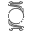
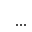

Create
Event title
Element title
Move to front
Move to back
Delete
Reset eyedraw
Lock
Unlock
Nuclear cataract
Cortical cataract
Posterior subcapsular cataract
Posterior chamber IOL

Anterior chamber IOL
Trabeculectomy bleb
Peripheral iridectomy

More...
Fuchs endothelial dystrophy
Radial keratotomy
LASIK flap
Corneal scar
Sector iridectomy
Posterior synechia
Rubeosis iridis
Field 1:
Large
Medium
Small
Field 2:
Large
Medium
Small
Field 3:
Option 1
Option 2
Report
Clear